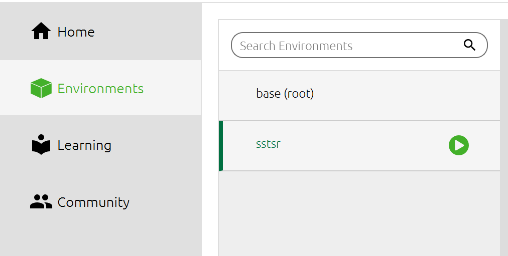
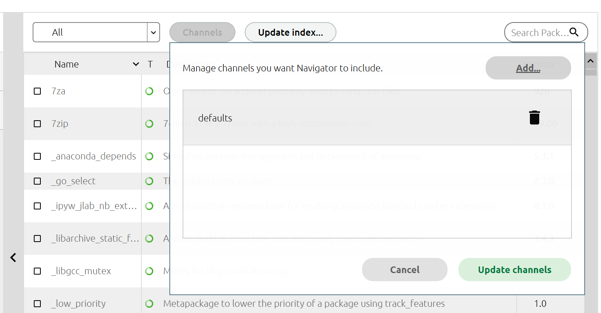
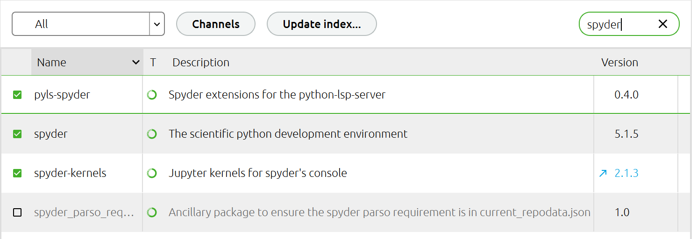

anaconda新环境中spyder安装不上的问题
在anaconda中创建新的envs之后会出现一般有两种install spyder的方式，一种是通过anaconda导航，另一种是在Anaconda Prompt中使用conda install spyder命令，但笔者使用这两种方法都行不通，网上也没有比较好的解决方案，进行各种尝试终于解决。
解决方法
最后发现是channel的问题，打开Anaconda Navigator，选中需要在其中安装spyder的环境，

点击channel，本来有四个条目，分别是：
前三个均为国内清华镜像源，在此全部删掉，只留下defaults。

搜索spyder并选择合适的版本安装即可

后记
通过Anaconda Navigator配置环境会更加直观，但是有些package如satpy无法搜索到，此时需要使用命令安装，如
1
conda install -c conda-forge satpy
猜测未证实：集成度高的包如spyder，satpy等尽量放在最后安，否则容易出现版本冲突，可以先安scipy等比较基础的包。
本博客所有文章除特别声明外，均采用 CC BY-NC-SA 4.0 许可协议。转载请注明来自 相子心のBlog！
 wechat
wechat alipay
alipay

评论